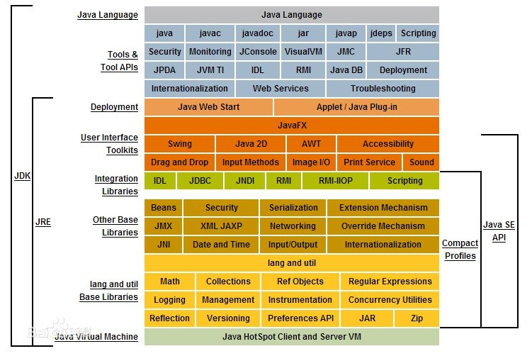
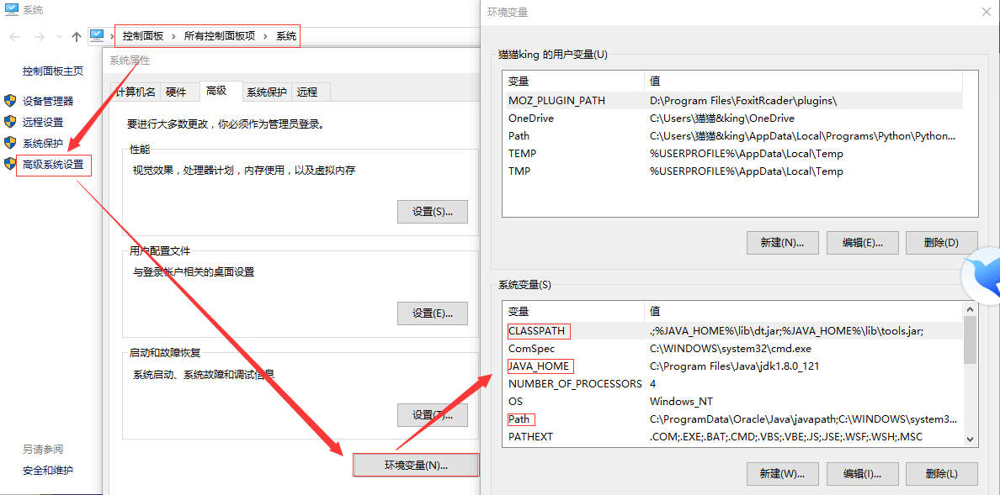

Java开发环境配置
- Java简单介绍
Java是一门面向对象的编程语言，不仅吸收了C++语言的各种优点，还摒弃了C++里难以理解的多继承、指针等概念，因此Java语言具有功能强大和简单易用两个特征。Java语言作为静态面向对象编程语言的代表，极好地实现了面向对象理论，允许程序员以优雅的思维方式进行复杂的编程。
Java具有简单性、面向对象、分布式、健壮性、安全性、平台独立与可移植性、多线程等特点。
Java Development Kit（JDK）是Java开发工具包。它是整个Java的核心，包括了Java运行环境、Java工具和Java基础类库。它是一种用于构建在Java平台上发布的应用程序、applet和组件的开发环境，是一切java应用程序的基础，所有的java应用程序是构建在它之上的。因此，使用java语言之前，需要在电脑上安装JDK，即Java的开发环境。
Java Runtime Environment（JRE）是Java运行环境，包括Java虚拟机、Java核心类库和支持文件，它是JDK的一部分，可以在其上运行、测试和传输Java应用程序，但不包括编译器、调试器和其它工具，所以不支持Java编程，如下为JDK和JRE关系图：

- 开发环境配置
1.在oracle官网上下载最新或者符合要求的JDK版本，并进行安装
2.安装成功后，在cmd中输入Java -version进行查看是否安装成功

3.在系统的高级系统设置中，配置java的环境变量，此处注意路径间以分号分隔

4.检查配置成功与否，在cmd中输入JAVAC，查看是否出现java相关用法信息，若出现则环境已配置成功，若出现‘JAVAC’不是内部或外部命令，说明在环境变量配置的时候路径没有输入正确。

5.此时，可以在该电脑上编写java程序了。
- 简单的Java使用
一般常用的Java开发工具有Eclipse、MyEclipse、Jedit、DrJava、Jext，本人使用的是Eclipse和MyEclipse。一般的开发工具提供各种开发框架，方便于编程使用，自动生成代码结构。本人还曾使用Sublime Text对java进行编程，大都用于实现某个小的数据结构或者算法，使用文本编程能让人更加熟悉Java的结构:
import java.util.Scanner;
import java.util.*;
public class Main{
public static void main(String[] args){
System.out.println("Hello World!");
}
}
对应类名，将文件保存为Main.java文件，运用cmd中的cd命令，首先找到Main.java文件的位置，输入:
javac Main.java
对Main.java文件进行编译，此时会生成二进制Main.class文件，然后对该文件进行运行：
java Main
运行结果为Hello World！